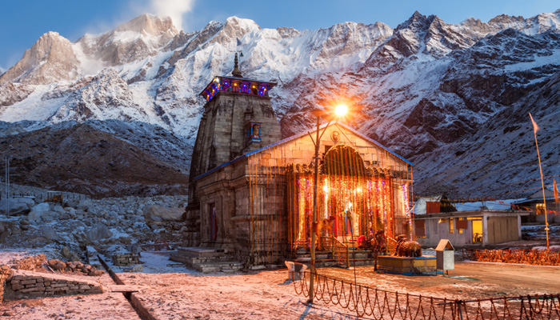
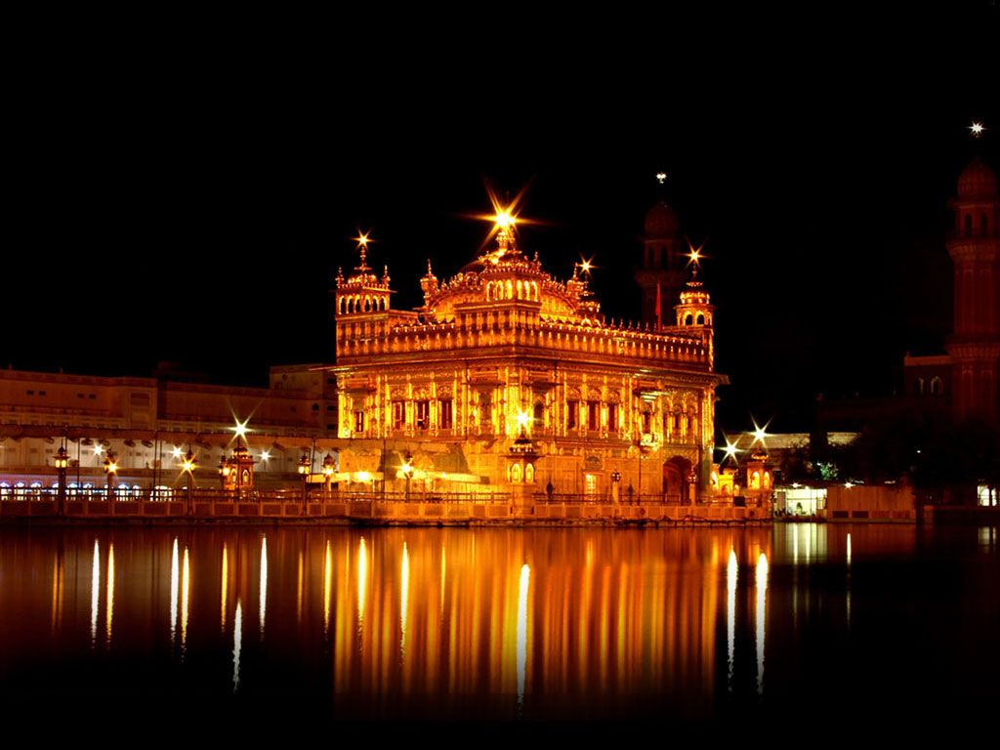
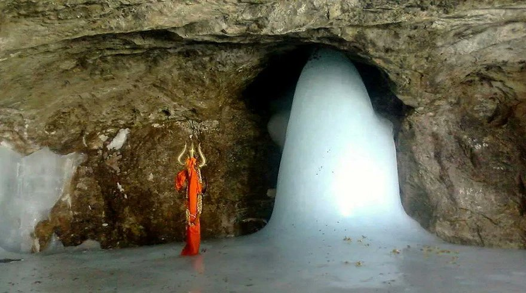

Badrinath or Badrinarayan Temple is a Hindu temple dedicated to Vishnu which is situated in the town of Badrinath in Uttarakhand, India.
It is also one of the four Chota Char Dham pilgrimage sites.The ancient abode of Lord Vishnu can be visited only between the months of April and November because the temple remains closed during the other months due to harsh weather conditions.
Famous Festivals are
Mata Murti-Ka-Mela
Badri-Kedar Festival

Kedarnath Temple, Uttarakhand
Situated in the Himalayan range of Garhwal (Uttarakhand), Kedarnath temple is one of the most sacred shrines in the world. The holy abode of Shiva is believed to have been built by the Pandavas to atone for their sins during Mahabharata.
The temple was restored by Adi Sankaracharya in the 8th century. It is one of the Chota Char Dhams of Uttarakhand and requires the pilgrims to trek a distance of 14 kms on the hilly terrain.
Standing at a height of 3,583 metres, surrounded by the glaciers and snow-clad peaks, the temple is closed during winters due to severe weather conditions.

Golden Temple
A famed Sikh temple in northern India, the Golden Temple gets its name from its gilded facade, which is said to be covered in pure gold leaf.
The 16th-century temple is considered the central place of worship of the Sikh religion. As such, it's common for devotees to make the pilgrimage at least once in a lifetime.
It's nothing short of a work of art. Inside, visitors will find colorful paintings and intricate tiled mosaics -- all representative of Mughal-style architecture.
The temple is famous another reason: its Langar, a communal kitchen that feeds anyone in need.
The langar is thought to serve more than 100,000 people per day and has oft been called the largest "free kitchen" in the world.

Amarnath Temple
Amarnath temple is situated in Jammu & Kashmir state in north India.
The temple is considered as one of the important part of Hinduism.
The temple is made in the form of a cave which is 19 metres long, 16 metres wide and 11 metres high.
The temple is dedicated to God Shiva. One has to cover a distance of 45 KM to reach the temple.
This travelling is known as Amarnath Yatra which opens for only 45 days in a year in the month of July and August.
The place is known as Amarnath or Amreshwara because God Shiva told Godess Parvati about Amaratva or immortality here.